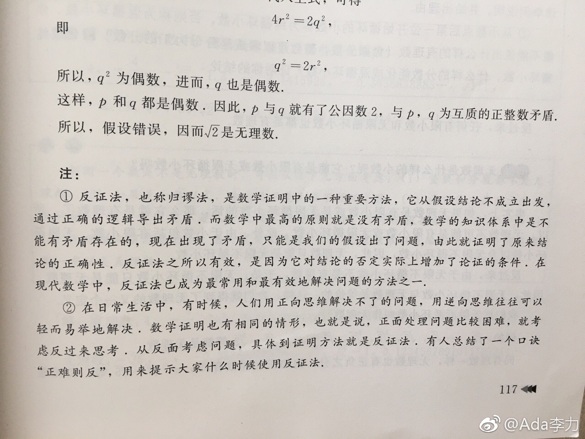

#创业#北京，沈阳两地办公，同事间肯定存在沟通不畅的问题。我的态度向来是直话直说，但发现根深蒂固的观念还是挺难改变的。比如大家一起吐槽某事做得不妥，我问有没有人跟当事人直接提过。没有，觉得那样做不好。但，集体在背后吐槽同事，是一件更不好的事情！
#读书#查理芒格经常提的一个思维方法是“总是倒过来想”今天翻姣姣的初一数学教材，发现“反证法”这个道理介绍得很清楚。提到“在日常生活中，有时候，人们用正向思维解决不了的问题，用逆向思维往往可以轻而易举地解决”我们需要的思维方法，其实很早就都学过。只是融会贯通地使用，需要一生的实践。